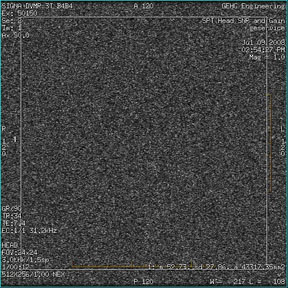
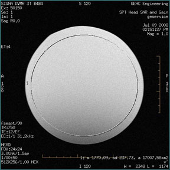
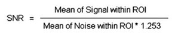

Operating Documentation
Direction 5500113, Rev# 3
Discovery MR750 3.0T Service Methods
Module Version 2.0, Version Date 8/19/08
Operating Documentation |
| Required Persons | Preliminary Reqs | Procedure | Finalization |
|---|---|---|---|
| 1 | Not Applicable | 15 mins | Not Applicable |
Follow this process to prepare for the SNR test using 3.0T Split Top Head Coil, (5182872).
| NOTE: | The split head coil can be used in one (1) mode of operation and has one (1) coil name: HEAD. Refer to the Data Sheet Step to understand the data required to calculate the individual element SNR. All ROI measurements are made on the individual element images, not on the composite image. The image quality check uses two different protocols for signal and noise image acquisition. The signal scan is an FSE sequence used to minimize susceptibility and B0 inhomogeneity effects. The noise scan is a GRE sequence that has a Control Variable (do_noise) to eliminate the transmit RF completely during the scan. The signal scan must be run prior to the noise scan as the R1, R2, and TG values from the signal scan are used for the noise scan. |
| Item | Qty | Effectivity | Part# | Manufacturer | |
|---|---|---|---|---|---|
| Head TLT Sphere Phantom | 1 | - | 2359877 | - | |
| Head TLT Loader | 1 | - | 46-287899G1 | - | |
| Condition | Reference | Effectivity |
|---|---|---|
The coil configuration name must be installed to run this tool: HEAD. | - | - |
If installing the coil for the first time into a system, please refer to Auto Coil Install. | - | - |
From the Scan Desktop, start new scan by clicking [Create New Worklist]. Enter Patient ID geservice and Patient Weight to 111 pounds. Click [Show All Protocols] to open protocols window.
Remove all other surface coils from the cradle. Place the Split Top Head Coil on the patient table with the ODU connectors extending into the magnet. Lock the baseplate into the table slots. Connect the ODU connectors on the MR unit (LPCA port P1). The cables from the head coil to the LCPA should not have crossovers or loops evident from the outside.
Remove any pads from the coil. Unlock and remove the top half of the coil by depressing the latches on either side of the coil. Set the phantom into the coil and re-attach the top half of the coil.
At the magnet, press the Alignment Light button to turn on the light. Move the cradle to align the coil to the alignment lights. Press the Landmark button to landmark the alignment.
Move the coil to scan position by pushing the Move to Scan button, ensuring cable does not get snagged.
At the console, set the protocols per the Signal section from Table 1: Signal and Noise Protocols. GE Service Personnel can use the Head SNR Signal protocol in the GE/Other protocol folder on 3.0T systems.
Click [Save Series] to download the protocols, then click [Prepare to Scan].
Run [Auto Prescan]. Take note of the R1, R2, and TG values.
R1 should equal 11 and R2 should equal 14.
If values are not correct, run [Manual Prescan] and adjust the R1 and R2 values. Click [Done] when complete.
Click [Scan].
A signal scan must be run prior to the noise scan as the same R1, R2, and TG values must be used for both the signal and noise scans. Do not run an Auto Prescan prior to the noise scan as the values will be changed.
Copy the signal scan series. Use Copy Series by highlighting signal series and click right mouse button. Click Paste Series in Rx Manager. GE Service Personnel can use the Head SNR Noise protocol in the GE/Other protocol folder on 3.0T Systems.
Click [View Edit] and set the protocols per the Noise section from Table 1: Signal and Noise Protocols.
Click [Save Series] and click [Prepare to Scan].
Open [Display CVs] menu under [Research Operations]. Set the rhformat and do_noise CVs to 1.
Run [Manual Prescan]. Do not make any changes. Click [Done].
Click [Scan].
Table 1: Signal and Noise Protocols
| Protocol | Signal | Noise |
| Patient Exam Information | ||
| Patient ID | geservice | geservice |
| Patient Name | HEAD | HEAD |
| Patient Weight | 111 lbs. (50 kg) | 111 lbs. (50 kg) |
| Patient Position | ||
| Patient Position | Supine | Supine |
| Patient Entry | Head First | Head First |
| Coil | HEAD | HEAD |
| Series Description | Signal | Noise |
| Imaging Parameters | ||
| Plane | Sagittal | Sagittal |
| Mode | 2D | 2D |
| Pulse Seq | FSE-XL | Gradient Echo |
| Imaging Options | None | None |
| PSD Name | Leave Blank | Leave Blank |
| Scan Timing | ||
| # of Echoes | 1 | 1 |
| TE | 17 | Min Full |
| TR | 750 | 50 |
| Echo Train Length | 4 | N/A |
| Bandwidth | 31.25 | 31.25 |
| Additional Parameters | ||
| Flip Angle | N/A | 1 |
| Acquisition Timing | ||
| Freq | 512 | 512 |
| Phase | 256 | 256 |
| NEX | 1 | 1 |
| Phase FOV | 1 | 1 |
| Freq DIR | A/P | A/P |
| Shim | Auto | Auto |
| Phase Correct | On | N/A |
| Contrast | Off | Off |
| Scanning Range | ||
| FOV | 24 | 24 |
| Slice Thickness | 3 | 3 |
| Spacing | 1.5 | 1.5 |
| Start R/L | 0 | 0 |
| P/A Center | 0 | 0 |
| I/S Center | 0 | 0 |
| End R/L | 0 | 0 |
| Slices | 1 | 1 |
| Table Delta | 0 | 0 |
A circular ROI should be used. Select ROI as 80% of the phantom image for the signal scan. For Noise scan choose 100% of Rectangular ROI.
Illustration 1: Noise ROI Measurement

Illustration 2: Signal ROI Measurement

ROIs in both signal and noise images can be measured directly in the image browser. Click the user interface button [MEASURE], select the rectangular shape, and adjust its size and orientation so that the ROI is similar to those found in the examples above (see Step and Step ). Select the circular ROI as 80% of the phantom image. The ROI appear in the lower right corner of the image. Mean, standard deviation, and area of the ROI will appear in the lower right corner of the image.
Record the values for mean signal, mean noise, and SNR in the data sheets (see Step ).
Individual receiver SNR is defined as the mean of data within the signal ROI divided by the mean of data within the noise ROI (with a correction factor).

| NOTE: | The SNR calculation uses the MEAN of the signal image and MEAN of the noise image. |
The SNR measurements must be greater than or equal to the SNR specification of 21.8 for the 3.0T Split Top Head Coil.
No cable continuity checking is recommended for the connector because of pin damage concerns.
Check the ODU connector for mechanical damage (e.g. cracks, etc.).
Inspect the contact pins in ODU connector for damage from improper insertion or corrosion, etc.
Make sure cradle latches and top latches are operating and still have adequate range of motion.
Use the table below to record the calculated signal to noise ratio (SNR) data obtained from the Functional Checks section.
Table 2: SNR Data Sheet
| Date | Mean Signal | Mean Noise | SNR |